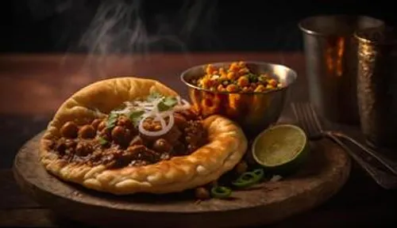
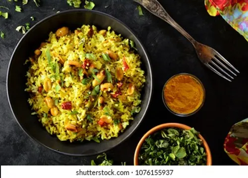
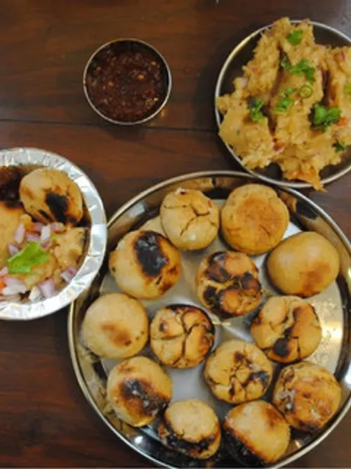
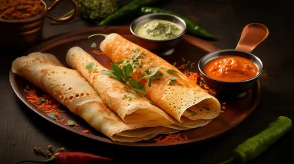

Veg Pasta
Ingredients:
Typically include water and semolina flour. Vegetable juice: Such as spinach, beet, tomato, or carrot, for color and flavor. ... Herbs or spices: Added for flavor.

Green Salad
Ingredients
:Vegetable Salad: Cucumber, carrots, onion, tomato, beetroot, cabbage, green chili, salt, lemon juice, mint leaves,... ... coriander leaves, olive oil, and sesame seeds. Green Salad: Mixed salad greens, onion, bell pepper, chicken deli meat, tomato, onion powder, garlic powder, salt, black pepper, and balsamic vinaigrette dressing

Chhole Bhature
Ingredients:
For Chhole:
1 cup chickpeas (soaked overnight), 2 medium onions, finely chopped, 2 tomatoes, pureed, 2 green chilies, slit ... ... 1-inch ginger, grated, 3-4 garlic cloves, minced 2 tablespoons oil, 2 teaspoons coriander powder, 1 teaspoon red chili powder, ½ teaspoon turmeric powder, 1 teaspoon garam masal, Salt to taste .For Bhature:
2 cups all-purpose flour (maida) 2 tablespoons semolina (sooji) ½ cup yogurt 1 teaspoon baking powder A pinch of salt Water as needed Graminn Organik Oil for frying
Cheese Burger
Ingredients:
Ground beef:
1 to 2 pounds, depending on the number of servings.Seasonings:
Salt, pepper, and other spices such as garlic ... ... powder, onion powder, and paprika.Optional ingredients:
Cheese, ketchup, mustard, lettuce, tomato, and onion.
Margherita Pizza
Ingredients:
Flour: 2-2 ⅓ cups all-purpose flour or bread flour Yeast: 1 packet instant yeast Sugar: 1 ½ teaspoons Salt: ¾ teaspoon ... ... Garlic powder and/or dried basil leaves: Optional Olive oil: 2 Tablespoons Warm water: ¾ cup

Poha: 1 ½ cups (114 grams, thick poha) Turmeric: ¼ teaspoon Salt: ½ + ⅛ teaspoon (divided, adjust to taste) Sugar: ½ teaspoon (optional) Oil: 1 tablespoon (avocado oil) ... ... Mustard seeds: ½ teaspoon Peanuts: 1 ½ tablespoons (raw peanuts) Red onion: 1 small (chopped) Green chili: 1 (chopped) Curry leaves: 10-12 Potatoes: ½ cup (½ inch cubes) Green peas: ⅓ cup (frozen, soaked in warm water for 10 minutes) Cilantro: 1 tablespoon (chopped) Lemon: ½ (juice of) Sev: To garnish
POHA
Ingredients:
Poha: 1 ½ cups (114 grams, thick poha) Turmeric: ¼ teaspoon Salt: ½ + ⅛ teaspoon (divided, adjust to taste) Sugar: ½ teaspoon (optional) Oil: 1 tablespoon (avocado oil) ... ... Mustard seeds: ½ teaspoon Peanuts: 1 ½ tablespoons (raw peanuts) Red onion: 1 small (chopped) Green chili: 1 (chopped) Curry leaves: 10-12 Potatoes: ½ cup (½ inch cubes) Green peas: ⅓ cup (frozen, soaked in warm water for 10 minutes) Cilantro: 1 tablespoon (chopped) Lemon: ½ (juice of) Sev: To garnish

Wheat flour: 1 cup Semolina: 1 tablespoon Corn flour (makke ka ata): 1/2 cup Salt: To taste Ajwain: 1/2 tsp Turmeric powder: 1/4 tsp Desi ghee: 1 tbsp Water for dough: As needed ... ... Toor daal: 1/2 cup Green moong dal: 1/8 cup Chana dal: 1/2 tablespoon Onion: 1 big Garlic cloves: 6 Green chilli: 3 Ginger: 2 inch Jeera: 1/2 tsp Bay leaf: 1 Black pepper pods: 4-6 Coriander powder: 1 tbsp Garam masala: 1/3 tsp Red chilli powder: 1/4 tsp Chopped coriander leaves: As needed Mustard seed: 1/4 tsp Dry red chilli: 1 Kashmiri lal mirch powder: 1/8 tsp Brinjal: 2 big Boiled mashed potato: 2 Chopped onion: 2 Chopped tomato: 2 Ginger-garlic paste: 1 tbsp Mustard oil: 1 tbsp Salt: To taste Chopped coriander leaves: As needed
BATI CHOKHA
Ingredients:
Wheat flour: 1 cup Semolina: 1 tablespoon Corn flour (makke ka ata): 1/2 cup Salt: To taste Ajwain: 1/2 tsp Turmeric powder: 1/4 tsp Desi ghee: 1 tbsp Water for dough: As needed ... ... Toor daal: 1/2 cup Green moong dal: 1/8 cup Chana dal: 1/2 tablespoon Onion: 1 big Garlic cloves: 6 Green chilli: 3 Ginger: 2 inch Jeera: 1/2 tsp Bay leaf: 1 Black pepper pods: 4-6 Coriander powder: 1 tbsp Garam masala: 1/3 tsp Red chilli powder: 1/4 tsp Chopped coriander leaves: As needed Mustard seed: 1/4 tsp Dry red chilli: 1 Kashmiri lal mirch powder: 1/8 tsp Brinjal: 2 big Boiled mashed potato: 2 Chopped onion: 2 Chopped tomato: 2 Ginger-garlic paste: 1 tbsp Mustard oil: 1 tbsp Salt: To taste Chopped coriander leaves: As needed

Rice: Short-grain parboiled rice, such as idli rice, is most often recommended for dosas. Some recipes use raw sona masuri rice ... ...or a combination of raw rice and idli rice. Lentils: Urad dal (skinned black gram) is the primary lentil used, sometimes combined with chana dal (bengal gram) for flavor and color. Fenugreek seeds: Added for fluffiness and to aid in fermentation. Poha: Flattened rice is sometimes included to enhance texture. Salt: Non-iodized salt or rock salt is used to taste.
DOSA
Ingredients:
Rice: Short-grain parboiled rice, such as idli rice, is most often recommended for dosas. Some recipes use raw sona masuri rice ... ...or a combination of raw rice and idli rice. Lentils: Urad dal (skinned black gram) is the primary lentil used, sometimes combined with chana dal (bengal gram) for flavor and color. Fenugreek seeds: Added for fluffiness and to aid in fermentation. Poha: Flattened rice is sometimes included to enhance texture. Salt: Non-iodized salt or rock salt is used to taste.